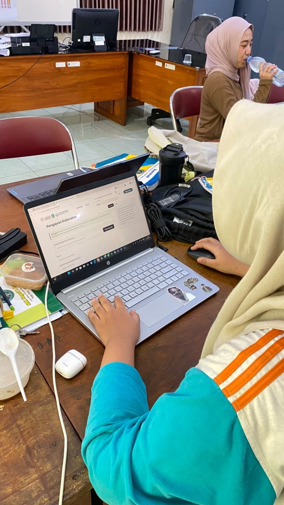
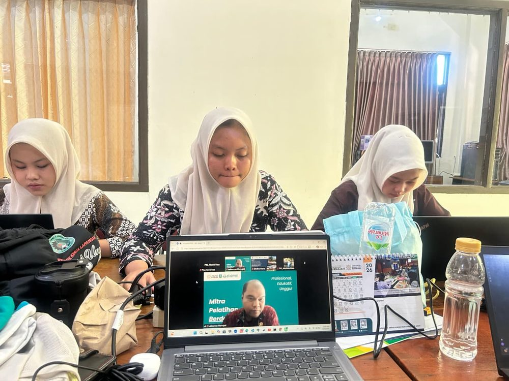
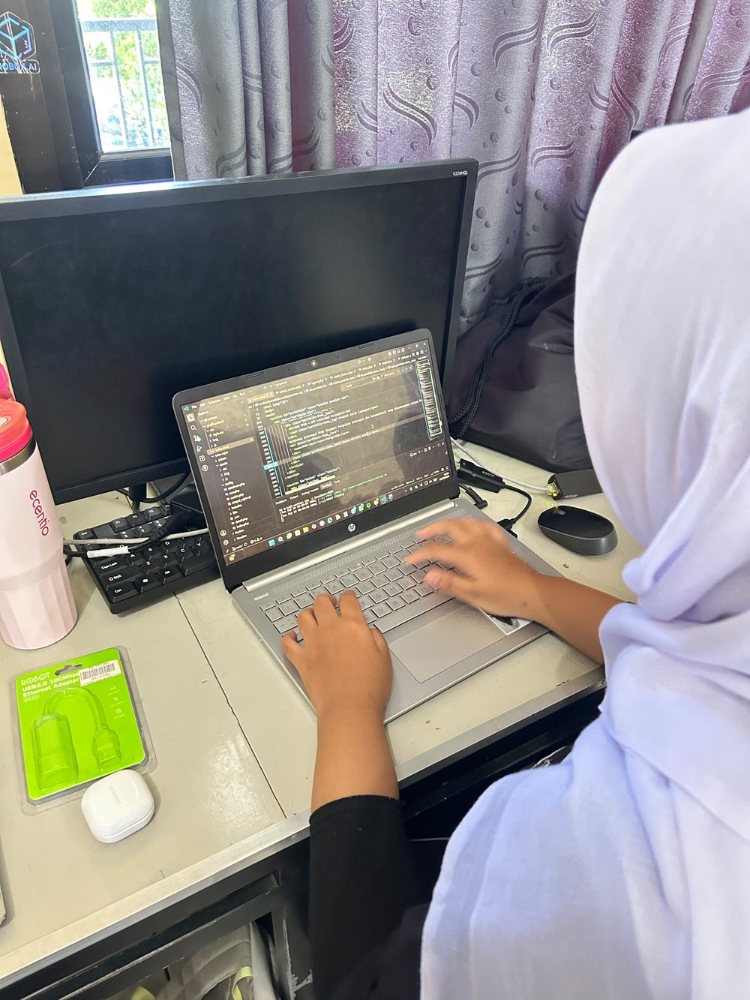

Rapi sejak awal
Menata file, penamaan, dan struktur kode supaya mudah dibaca ulang.
Terbuka untuk proyek dan magang
Junior Web Developer yang membangun website rapi, responsif, dan enak dipakai.
Siswa Rekayasa Perangkat Lunak asal Ponorogo. Mengerjakan website dari menyusun tampilan antarmuka sampai mengelola data di belakangnya.
Menjadi web developer yang membangun produk digital rapi, mudah dipakai, dan bisa diandalkan penggunanya.
Belajar dari fondasi yang benar, membuktikan kemampuan lewat proyek nyata, dan terus memperbaiki kualitas kode yang ditulis.

Tentang saya
Latar belakang singkat, cara saya bekerja, dan hal yang sedang saya dalami.
Saya menikmati proses mengubah sebuah rancangan menjadi halaman web yang benar-benar bisa dipakai orang lain.
Saya siswa jurusan Rekayasa Perangkat Lunak di SMK Negeri 1 Jenangan. Selama belajar, saya terbiasa mengerjakan proyek dari awal: menyusun struktur halaman, menata tampilan dengan CSS, menambahkan interaksi dengan JavaScript, lalu menghubungkannya dengan database.
Beberapa proyek yang pernah saya kerjakan antara lain website toko rajut Amoura Atelier, website informasi PPID, sistem kasir sederhana, dan halaman profil ini sendiri.
Sebuah website tidak cukup hanya berjalan. Strukturnya harus jelas, kodenya rapi supaya mudah dikembangkan lagi, dan tampilannya tetap nyaman dibuka dari layar kecil maupun besar.
Menata file, penamaan, dan struktur kode supaya mudah dibaca ulang.
Mencoba, memperbaiki yang keliru, lalu menerapkannya di proyek berikutnya.
Mengutamakan halaman yang mudah dipahami oleh penggunanya.
Profil profesional
Junior Web Developer Mengerjakan website statis maupun dinamis sebagai pembuktian kompetensi.
SMK Negeri 1 Jenangan Program Keahlian Rekayasa Perangkat Lunak, Ponorogo, Jawa Timur.
Pengembangan web Perancangan antarmuka, pemrograman web, dan pengelolaan basis data.
HTML, CSS, dan JavaScript untuk sisi tampilan; PHP dan PostgreSQL untuk sisi data. Visual Studio Code dan Git menemani hampir semua proyek yang saya kerjakan.
Pendidikan
Disusun dari jenjang terbaru sampai yang paling awal.
Rekayasa Perangkat Lunak
Mempelajari dasar pemrograman, pengembangan website, basis data, analisis kebutuhan sistem, serta pengerjaan proyek perangkat lunak dari perancangan sampai pengujian.
Menempuh pendidikan menengah pertama sekaligus mulai mengenal komputer dan teknologi informasi sebelum memilih jurusan Rekayasa Perangkat Lunak.
Menyelesaikan pendidikan dasar dan mengikuti berbagai kegiatan sekolah yang membangun kebiasaan belajar serta kerja sama.
Pendidikan anak usia dini sebagai awal perjalanan belajar secara formal.
Pengalaman
Pengalaman belajar, proyek sekolah, dan kegiatan di luar jam pelajaran.
Membangun website toko rajut yang mencakup katalog produk, kategori, pencarian, keranjang belanja, checkout, serta halaman admin untuk mengelola produk dan pesanan.
Menyusun konsep dan tampilan halaman informasi publik agar data yang disajikan lebih terstruktur dan mudah ditelusuri pengunjung.
Mengerjakan alur transaksi mulai dari pendataan produk, perhitungan belanja, sampai penyimpanan riwayat penjualan ke dalam database.
Membuat ulang berbagai tampilan website untuk melatih struktur HTML yang semantik, penataan CSS, dan penggunaan JavaScript di luar jam pelajaran.
Keahlian
Ruas berwarna menunjukkan seberapa jauh saya menguasai masing-masing kemampuan.
Dua ruas: dasar Tiga ruas: cukup Empat ruas: mahir
Karya & portofolio
Website dan sistem yang saya buat selama belajar di jurusan Rekayasa Perangkat Lunak.
Website dinamis · toko online
Website toko rajut rumahan di Madiun dengan katalog produk, kategori, pencarian, detail produk, keranjang, checkout, hingga dasbor admin untuk mengelola produk dan transaksi.
Website informasi
Halaman informasi publik untuk UPT Latkesmas Murnajati Kampus Madiun agar pengunjung lebih cepat menemukan dokumen yang dicari.
Aplikasi transaksi
Aplikasi kasir sederhana untuk mendata produk, menghitung total belanja, dan menyimpan riwayat transaksi ke database.
Website statis · profil pribadi
Website profil yang sedang Anda buka, dibangun dengan HTML, CSS, dan JavaScript tanpa framework, serta menyesuaikan diri pada berbagai ukuran layar.
Sertifikat & prestasi
Pengalaman kerja di lingkungan instansi sekaligus mengerjakan kebutuhan website bersama pembimbing lapangan.
Mengikuti kunjungan industri SMKN 1 Jenangan sebagai peserta di PT Educa Sisfomedia Indonesia, Salatiga.
Menyelesaikan pelatihan nasional Digital Talent Academy, Digital Talent Scholarship 2026, selama 11.5 jam pelatihan.
Kegiatan
Membuat proyek website sebagai tugas mata pelajaran, dari tahap perancangan sampai siap ditampilkan kepada guru pembimbing untuk dinilai.

Terlibat langsung dalam kebutuhan teknologi informasi di instansi tempat praktik.

Mengikuti materi dan latihan pemrograman web di luar jam pelajaran untuk menambah jam terbang menulis kode.

Menyiapkan dokumentasi, mockup, dan produk website sebagai bahan penilaian asesor.
Catatan belajar
Catatan tentang pemilihan tag semantik dan penamaan kelas supaya kode tetap rapi ketika halaman bertambah banyak.
Baca tulisannyaPengalaman mengerjakan Amoura Atelier, mulai dari merancang tabel produk sampai menyusun alur checkout.
Baca tulisannyaRingkasan tentang relasi antartabel dan kesalahan yang sering saya temui saat pertama kali merancang database.
Baca tulisannya